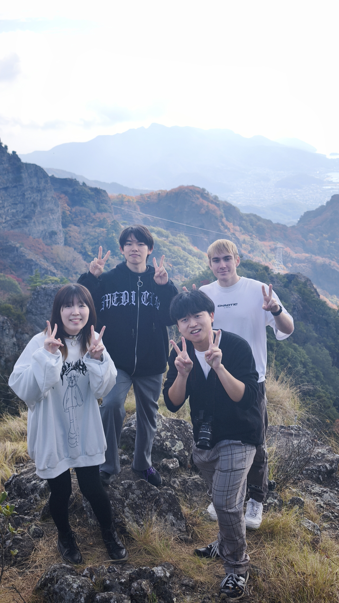
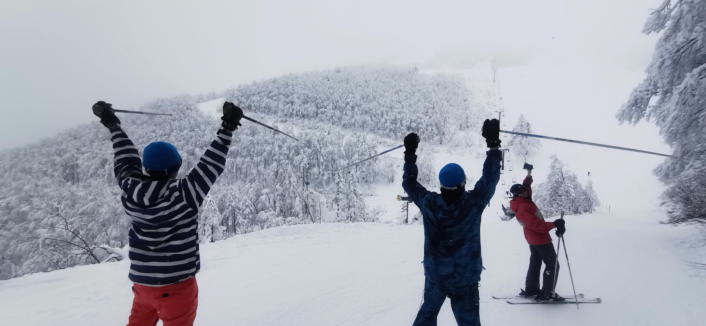
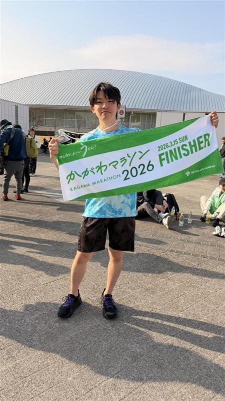

CASE No.01
CLOSED
SNS体調変化分析アプリ「TwiAnalyzer」
SNS投稿を主観的な健康データとして扱い、体調・気分の変化を分析するプロトタイプを開発。問診表では拾いにくい日常的な変化の可視化を目指した。
座右の銘
Every day, in every way,
I'm getting better and better
（私は毎日、あらゆる面で、
ますますよくなっている）-Émile Coué-
香川大学の情報工学系安藤研究室（主領域：NLP）で、日本語の災害体験談を対象にしたデータ構築・分析に取り組んでいます。
関心領域は、災害発生直後から避難・混乱期における心理状態、状況認知、認知バイアスの推定です。
Pythonによる収集・前処理・構造化を進めており、LLM/RAGを用いた支援対話システムの基盤づくりを行いたいと考えています。
「事実は、いつも書き留めた者の側にある」
手がけたもの、研究。
SNS投稿を主観的な健康データとして扱い、体調・気分の変化を分析するプロトタイプを開発。問診表では拾いにくい日常的な変化の可視化を目指した。
キーワードと期間を指定し、通常時と対象期間の投稿頻度・出現語を比較。WordCloudと頻度差分により、体調不良前後の言語変化を見える化した。
東日本大震災に絞った体験談集合から、認知と事実のギャップを元に手助けとなるRAG/LLMを作成する
香川県で生まれ、よく動き、気になったものへまっすぐ手を伸ばす子供だった。
中学受験を機に親元を離れ、寮生活のなかで、自分で考えて動くことの大切さを学び、一生涯の友人らを手に入れた。
地元に戻って大学へ進み、情報工学と自然言語処理に出会う。いまは災害体験談に残る言葉から、人の心理や判断の揺れを読み解く研究を行なっている。
関心のある分野について簡単に記載
机に向かう時間と同じくらい、外へ出て体を動かす時間も大切にしている。
走る、考える、声をかける。短い一瞬の判断が積み重なるところに面白さがある。

知らない土地を歩き、景色や食べ物、人の暮らしに触れることが気分転換になる。

冬の空気の中で斜面を滑る時間は、頭を空にして集中できる大切な楽しみ。

マラソン大会を目標に、日々の距離を少しずつ積み重ねる。K川マラソンの記録もここに残す。
この記録を読んでくださり、感謝いたします。
仕事のご依頼、感想、同じ本を愛する者としての便りでも——どうぞ気軽に。
返事は、必ず差し上げます。